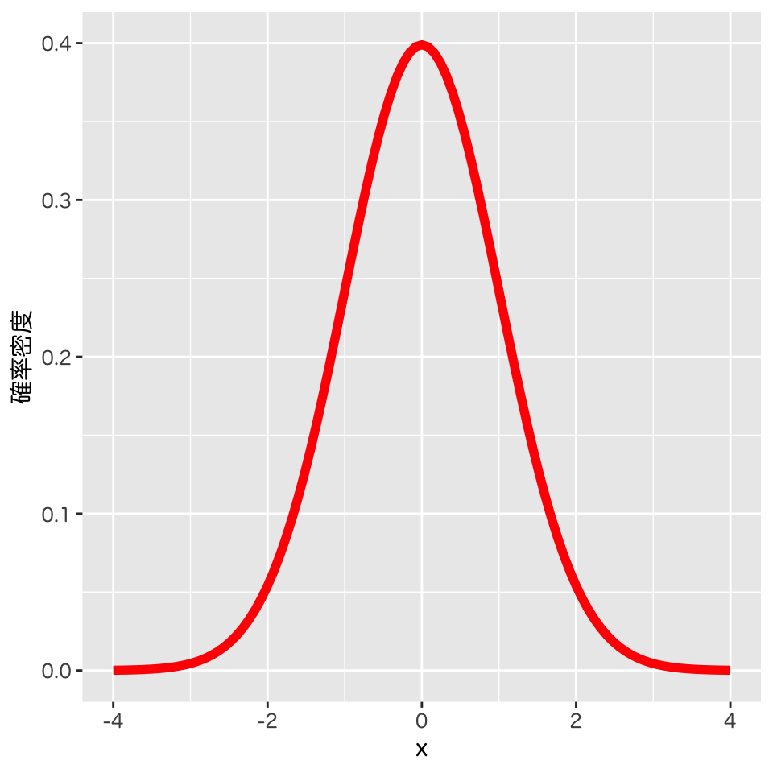
多変量解析 - 第2講
定義
注目する事象(標本空間の部分集合)に対して， それが起きる確率(区間 \([0,1]\) の実数)を返す関数
\[\begin{equation} P(\text{事象})=\text{確率値} \end{equation}\]
を 確率分布 という．
離散分布を記述する方法
1つの見本点 \(x\) からなる事象(根元事象という)を \(A=\{x\}\) とする． 事象 \(A\) の起きる確率
\[\begin{equation} P(A=\{x\})= p(x) \end{equation}\]
を表す関数 \(p\) を 確率質量関数 という．
連続分布を記述する方法
事象 \(A\) が起きる確率は 確率密度関数 \(p\) の積分
\[\begin{equation} P(A)=\int_A p(x)dx \end{equation}\]
で表される．
\(A\) に含まれる適当な点を \(x\) とし， \(A\) の大きさ(考える空間により体積や面積に相当)を \(|A|\) と書くことにすれば， 事象 \(A\) の起きる確率を密度と事象の大きさの積で近似することができる．
\[\begin{equation} P(A)=\int_A p(x)dx \simeq p(x)\cdot|A| \end{equation}\]

標本空間 : \((-\infty,\infty)\)
母数 : 平均 \(\mu\), 分散 \(\sigma^{2}\)
密度関数 :
\[\begin{equation} p(x) = \frac{1}{\sqrt{2\pi}\sigma}e^{-\frac{(x-\mu)^{2}}{2\sigma^{2}}} \end{equation}\]
備考 : \(\mu=0,\sigma=1\) のとき 標準正規分布 と呼ぶ．
標本空間 : \(\mathbb{R}^{p}\)
母数 : 平均 \(\boldsymbol{\mu}\), 分散共分散行列 \(\Sigma\)
密度関数 :
\[\begin{equation} p(\boldsymbol{x}) =\frac{1}{\sqrt{(2\pi)^p|\Sigma|}} e^{-\frac{1}{2}(\boldsymbol{x}-\boldsymbol{\mu})^{\mathsf{T}} \Sigma^{-1}(\boldsymbol{x}-\boldsymbol{\mu})} \end{equation}\]
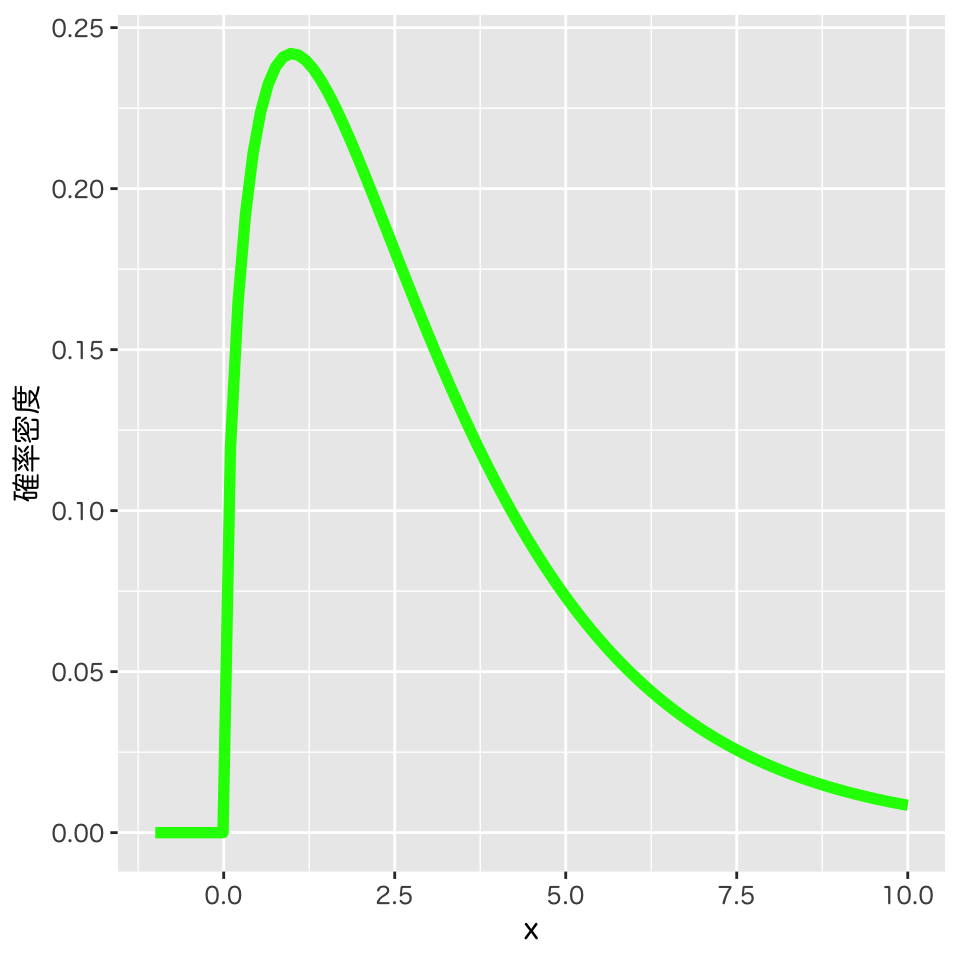
標本空間 : \([0,\infty)\)
母数 : 自由度 \(\nu\)
密度関数 :
\[\begin{align} p(x) &= \frac{1}{2^{\nu/2}\Gamma(\frac{\nu}{2})}x^{\nu/2-1}e^{-x/2}\\ &\quad\Gamma(z)=\int_0^\infty e^{-t}t^{z-1}dt \end{align}\]
備考 : 標準正規分布に従う独立な確率変数の2乗和の分布
標準正規分布に従う独立な確率変数の2乗和の分布
\[\begin{align} Z&=\sum_{i=1}^{\nu}X_{i}^{2} \sim \chi^{2}(\nu) \quad\text{(自由度 \(\nu\) の \(\chi^{2}\) 分布)}\\ &X_{i}\sim \mathcal{N}(0,1)\;(i=1,\dotsc,\nu) \quad\text{(標準正規分布)} \end{align}\]
分散\(\sigma^{2}\)の正規分布に従う確率変数の不偏分散は \(\chi^{2}\)分布に従う確率変数の\(\sigma^{2}\)倍となる
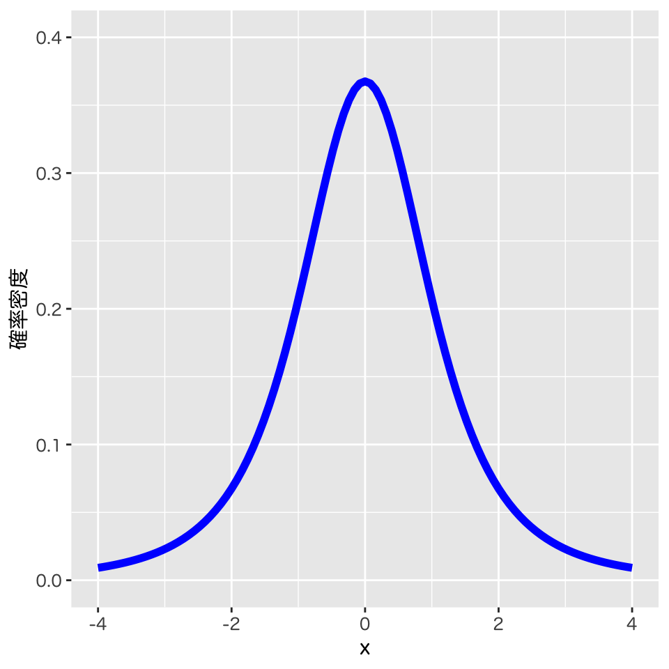
標本空間 : \((-\infty,\infty)\)
母数 : 自由度 \(\nu\)
密度関数 :
\[\begin{equation} p(x)= \frac{\Gamma\left(\frac{\nu+1}{2}\right)} {\sqrt{\nu\pi}\Gamma\left(\frac{\nu}{2}\right)} \left(1+\frac{x^{2}}{\nu}\right)^{-\frac{1}{2}(\nu+1)} \end{equation}\]
備考 : 標準正規分布と \(\chi^{2}\)分布に従う独立な 確率変数の比の分布
標準正規分布と \(\chi^{2}\)分布に従う独立な確率変数の比の分布
\[\begin{align} Z&=\frac{X}{\sqrt{Y/\nu}} \sim \mathcal{T}(\nu) \quad\text{(自由度 \(\nu\) の \(t\) 分布)}\\ &X\sim \mathcal{N}(0,1), \quad Y\sim \chi^{2}(\nu) \end{align}\]
正規分布に従う確率変数の標本平均と真の値の差は 不偏分散で標準化すると\(t\)分布に従う確率変数となる
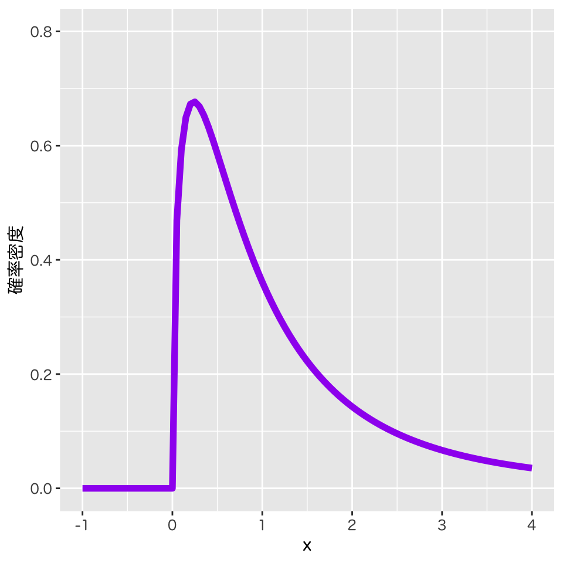
標本空間 : \([0,\infty)\)
母数 : 自由度 \(\nu_{1},\nu_{2}\)
密度関数 :
\[\begin{align} p(x) &= \frac{(\nu_{1}/\nu_{2})^{\nu_{1}/2}}{B(\nu_{1}/2,\nu_{2}/2)} \frac{x^{\nu_{1}/2-1}}{(1+\nu_{1}x/\nu_{2})^{(\nu_{1}+\nu_{2})/2}}\\ &\quad B(x,y)=\int_{0}^{1}t^{x-1}(1-t)^{y-1} dt \end{align}\]
備考 : \(\chi^{2}\)分布に従う独立な確率変数の比の分布
\(\chi^{2}\)分布に従う独立な確率変数の比の分布
\[\begin{align} Z&=\frac{Y_{1}/\nu_{1}}{Y_{2}/\nu_{2}} \sim \mathcal{F}(\nu_{1},\nu_{2}) \quad\text{(自由度\(\nu_{1},\nu_{2}\)の\(F\)分布)}\\ &Y_{i}\sim \chi^{2}(\nu_{i})\;(i=1,2) \end{align}\]
正規分布に従う確率変数の2つの独立な標本の不偏分散の比は \(F\)分布に従う確率変数となる
定理
\(\{X_n\}\) を確率変数列として
\[\begin{equation} S_n=\sum_{k=1}^n X_k \end{equation}\]
とする． \(\{X_n\}\) が独立で， \(\{\mathrm{Var}(X_n)\}\) が有界ならば
\[\begin{equation} \frac{S_n-\mathbb{E}[S_n]}{n}\to 0 \text{ a.s.} \end{equation}\]
が成り立つ．
定理
\(\{X_n\}\) は独立で， 平均 \(\mu\) ，標準偏差 \(\sigma\) の同じ分布に従うとする． このとき，すべての実数 \(a < b\) に対して
\[\begin{equation} P\Bigl(a\leq\frac{\sqrt{n}(\bar{X}_n-\mu)}{\sigma}\leq b \Bigr) \to\frac{1}{\sqrt{2\pi}}\int_a^be^{-\frac{x^2}{2}}dx\quad (n\to\infty) \end{equation}\]
が成り立つ．
\(X_i\) の分布が何であっても， サンプル数 \(n\) が十分大きければ， 標本平均と真の平均の差 \(\bar{X}_n-\mu\) の分布は， 標準正規分布 を利用して
\[\begin{equation} P\Bigl(a\frac{\sigma}{\sqrt{n}}\leq\bar{X}_n-\mu\leq b\frac{\sigma}{\sqrt{n}} \Bigr) \simeq \frac{1}{\sqrt{2\pi}}\int_a^be^{-\frac{x^2}{2}}dx \end{equation}\]
で近似できる．
漸近正規性
多くの推定量 \(\hat{\theta}\) の分布は正規分布で近似できる
標準正規分布の密度関数
\[\begin{equation} p(x) = \frac{1}{\sqrt{2\pi}}e^{-\frac{x^{2}}{2}} \end{equation}\]
を\(\mathbb{R}\)上で積分すると 1となることを確かめよ
標準正規分布に従う確率変数を\(X\)とする． \(X\)が 0付近の値をとる確率と 1付近の値をとる確率の比を求めよ
2つの標準正規分布の積を考えて， 重積分を極座標に変換すればよい
\[\begin{align} &\int_{-\infty}^{\infty} \int_{-\infty}^{\infty} e^{-x^{2}/2}e^{-y^{2}/2}dxdy\\ &= \int_{0}^{2\pi} \int_{0}^{\infty} e^{-r^{2}/2}rdrd\theta = 2\pi\int_{0}^{\infty}e^{-z}dz =2\pi \end{align}\]
微小な区間 \(\Delta\) を考えて， 密度を用いた近似計算を利用すればよい
\[\begin{align} &\frac{P(X\text{が0付近})}{P(X\text{が1付近})}\\ &\simeq\frac{p(0)|\Delta|}{p(1)|\Delta|} =\frac{\exp(0)}{\exp(-1/2)}=\sqrt{e}\simeq 1.65 \end{align}\]
記述統計量 (または要約統計量・基本統計量)
一般に確率分布は未知
手に入る少数のサンプル(観測データ)から 推定
\[\begin{equation} X_1,X_2,\dots,X_n \end{equation}\]
真の値と観測データによる推定には差が存在
データの代表値を表す記述統計量
平均 (mean)
\[\begin{equation} \mu=\mathbb{E}[X] = \begin{cases} \sum_{x\in\Omega} x p(x), &\text{(離散分布の場合)}\\ \int_{x\in\Omega} x p(x)dx, &\text{(連続分布の場合)} \end{cases} \end{equation}\]
標本平均 (sample mean)
\[\begin{equation} \bar{X} =\frac{1}{n}\sum_{i=1}^{n}X_{i} =\frac{X_{1}+\dotsb+X_{n}}{n} % =\frac{X_1+X_2+\cdots+X_n}{n} \end{equation}\]
データのばらつき具合を表す記述統計量
分散 (variance)
\[\begin{equation} \mathrm{Var}(X)=\sigma^{2}=\mathbb{E}[(X-\mu)^{2}] \end{equation}\]
標本分散 (sample variance)
\[\begin{equation} S^{2} =\frac{1}{n}\sum_{i=1}^n(X_{i}-\bar{X})^{2} =\frac{(X_{1}-\bar{X})^{2}+\dotsb+(X_{n}-\bar{X})^{2}}{n} % =\frac{(X_1-\bar{X})^2+(X_2-\bar{X})^2+\cdots+(X_n-\bar{X})^2}{n} \end{equation}\]
標本平均は \(\mu\) の 不偏推定量である
\[\begin{equation} \mathbb{E}[\bar{X}]=\mu \end{equation}\]
標本分散は \(\sigma^2\) の 不偏推定量ではない
\[\begin{equation} \mathbb{E}[S^2]=\frac{n-1}{n}\sigma^2 \end{equation}\]
不偏性を担保した分散の推定量
バイアス補正 : 標本分散に \(n/(n-1)\) を乗じたもの
\[\begin{equation} s^2=\frac{n}{n-1}S^2=\frac{1}{n-1}\sum_{i=1}^n(X_i-\bar{X})^2 \end{equation}\]
は \(\sigma^2\) の不偏推定量となる
標準偏差 (standard deviation)
\[\begin{equation} \sigma=\sqrt{\mathrm{Var}(X)}=(\mathbb{E}[(X-\mu)^{2}])^{1/2} \end{equation}\]
標本標準偏差 (sample standard deviation)
\[\begin{equation} \hat\sigma=s \end{equation}\]
一般に \(s\) は標準偏差 \(\sigma\) の 不偏推定量ではない
複数データの分析のために単位や基準を揃える方法
データ \(X_{1},X_{2},\dotsc,X_{n}\) の標準化 (standardization)
\[\begin{equation} Z_{i}=\frac{X_i-\bar{X}}{s}\quad(i=1,2,\dotsc,n) \end{equation}\]
\(Z_{i}\) : 標準得点 (standard score) または Zスコア (Z-score) と呼ばれる
別の基準での標準化
標本平均50, 標準偏差10への線形変換
\[\begin{equation} T_{i}=10Z_{i}+50\quad(i=1,\dotsc,n) \end{equation}\]
\(T_{i}\) : 偏差値得点 または Tスコア (T-score) と呼ばれる
複数のデータ間の関係を知るための記述統計量
共分散 (covariance)
\[\begin{equation} \mathrm{Cov}(X,Y)=\mathbb{E}[(X-\mathbb{E}[X])(Y-\mathbb{E}[Y])] \end{equation}\]
標本共分散 (sample covariance)
\[\begin{equation} \mathrm{Cov}(X,Y)=\frac{\sum_{i=1}^n(X_i-\bar{X})(Y_i-\bar{Y})}{n-1} \end{equation}\]
2種類のデータ間の比例関係の大きさ
相関 (correlation)
\[\begin{equation} \rho=\frac{\mathrm{Cov}(X,Y)}{\sqrt{\mathrm{Var}(X)\mathrm{Var}(Y)}} \end{equation}\]
標本相関 (sample correlation)
\[\begin{equation} \rho=\frac{\sum_{i=1}^n(X_i-\bar{X})(Y_i-\bar{Y})} {\sqrt{\sum_{i=1}^n(X_i-\bar{X})^2}\sqrt{\sum_{i=1}^n(Y_i-\bar{Y})^2}} \end{equation}\]
確率質量関数 : \(f_{\boldsymbol{\theta}}(x)\)
確率質量関数のパラメタ : \(\boldsymbol{\theta}=(\theta_1,\dots,\theta_p)\)
独立な確率変数の同時確率
\[\begin{align} & P(X_1=x_1,X_2=x_2,\dots,X_n=x_n) =\prod_{i=1}^nP(X_i=x_i)\\ &= \prod_{i=1}^nf_{\boldsymbol{\theta}}(x_i) =f_{\boldsymbol{\theta}}(x_1)\cdot f_{\boldsymbol{\theta}}(x_2)\cdots f_{\boldsymbol{\theta}}(x_n) \end{align}\]
定義
パラメタ \(\boldsymbol{\theta}\) に対して 観測データ \(X_1,X_2,\dots,X_n\) が得られる理論上の確率
\[\begin{equation} L(\boldsymbol{\theta}) =\prod_{i=1}^nf_{\boldsymbol{\theta}}(X_i) \end{equation}\]
を \(\boldsymbol{\theta}\) の 尤度 と言い， \(\boldsymbol{\theta}\) の関数 \(L\) を 尤度関数 と呼ぶ．
確率密度関数 : \(f_{\boldsymbol{\theta}}(x)\)
確率密度関数のパラメタ : \(\boldsymbol{\theta}=(\theta_1,\dots,\theta_p)\)
独立な確率変数の同時確率
\[\begin{align} & P(x_1\leq X_1\leq x_1+\delta,\dotsc,x_n\leq X_n\leq x_n+\delta)\\ &=\prod_{i=1}^nP(x_i\leq X_i\leq x_i+\delta)\\ &\simeq \prod_{i=1}^nf_{\boldsymbol{\theta}}(x_i)\delta =f_{\boldsymbol{\theta}}(x_1)\cdot f_{\boldsymbol{\theta}}(x_2)\cdots f_{\boldsymbol{\theta}}(x_n)\delta^{n} \end{align}\]
定義
パラメタ \(\boldsymbol{\theta}\) に対して 観測データ \(X_1,X_2,\dots,X_n\) が得られる理論上の確率密度
\[\begin{equation} L(\boldsymbol{\theta}) =\prod_{i=1}^nf_{\boldsymbol{\theta}}(X_i) \end{equation}\]
を \(\boldsymbol{\theta}\) の 尤度 と言い， \(\boldsymbol{\theta}\) の関数 \(L\) を 尤度関数 と呼ぶ．
最尤推定量
\(\Theta\) を尤度関数の定義域として， 尤度関数を最大とする \(\hat{\boldsymbol{\theta}}\)
\[\begin{equation} L(\hat{\boldsymbol{\theta}}) =\max_{\boldsymbol{\theta}\in\Theta}L(\boldsymbol{\theta}). \end{equation}\]
を \(\boldsymbol{\theta}\) の 最尤推定量 という．
定理
条件付確率では次の等式が成り立つ．
\[\begin{equation} P(A|B) =\frac{P(A)P(B|A)}{P(B)}. \end{equation}\]
定理
\(\Omega=A_1+A_2+\dotsb+A_n\) のとき
\[\begin{equation} P(A_i|B) =\frac{P(A_i)P(B|A_i)}{\sum_{k=1}^nP(A_k)P(B|A_k)} \end{equation}\]
が成り立つ．
以下の問に答えなさい
A先生は大の野球ファンで， 球団Hの勝敗で翌日の機嫌が左右される． よくよく調べた結果
が成り立っているとする．
また球団Hの勝率は現在のところ
となっているとする．
まず事象を定義する
\[\begin{align} A&:\text{先生の機嫌が良い}& && A^{c}&:\text{先生の機嫌が悪い}\\ H&:\text{球団が勝つ}& && H^{c}&:\text{球団が負ける} \end{align}\]
条件を書き下す
\[\begin{align} P(A|H)&=0.9& && P(A^{c}|H)&=0.1\\ P(A^{c}|H^{c})&=0.7& && P(A|H^{c})&=0.3\\ P(H)&=0.6& && P(H^{c})&=0.4 \end{align}\]
A先生が機嫌が良いときに球団Hが勝った確率は？
\[\begin{align} P(H|A) &=\frac{P(A,H)}{P(A)}\\ &=\frac{P(A,H)}{P(A,H)+P(A,H^{c})}\\ &=\frac{P(A|H)P(H)}{P(A|H)P(H)+P(A|H^{c})P(H^{c})}\\ &=\frac{0.9\times 0.6}{0.9\times 0.6+0.3\times 0.4}\\ &=\frac{9}{11}\simeq 0.818 \end{align}\]
A先生が機嫌が悪いときに球団Hが負けた確率は？
\[\begin{align} P(H^{c}|A^{c}) &=\frac{P(A^{c},H^{c})}{P(A^{c})}\\ &=\frac{P(A^{c},H^{c})}{P(A^{c},H)+P(A^{c},H^{c})}\\ &=\frac{P(A^{c}|H^{c})P(H^{c})}{P(A^{c}|H)P(H)+P(A^{c}|H^{c})P(H^{c})}\\ &=\frac{0.7\times 0.4}{0.1\times 0.6+0.7\times 0.4}\\ &=\frac{14}{17}\simeq 0.824 \end{align}\]
以下の式で計算される
\[\begin{multline} P(\text{表の回数}=k)\\ = \left(20\atop k\right) 0.5^{k} (1-0.5)^{20-k} \end{multline}\]
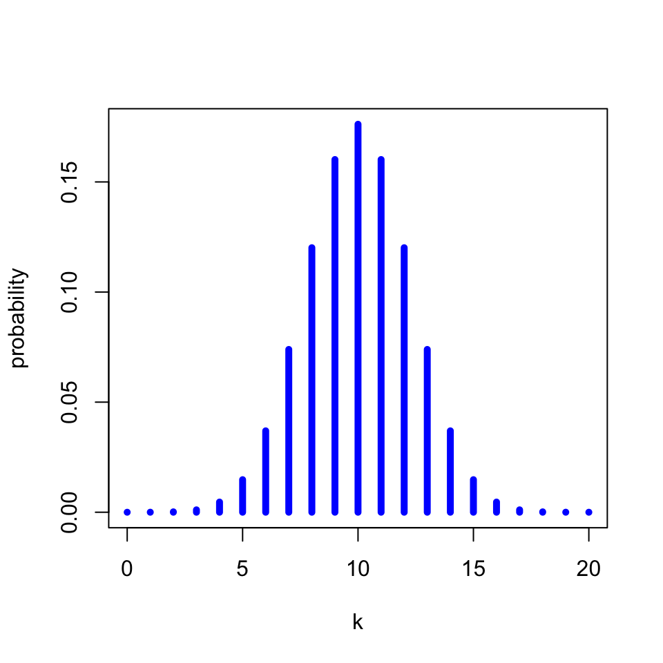
以下の式で計算される
\[\begin{multline} P(\text{表の回数}=k)\\ = \left(20\atop k\right) 0.6^{k} (1-0.6)^{20-k} \end{multline}\]
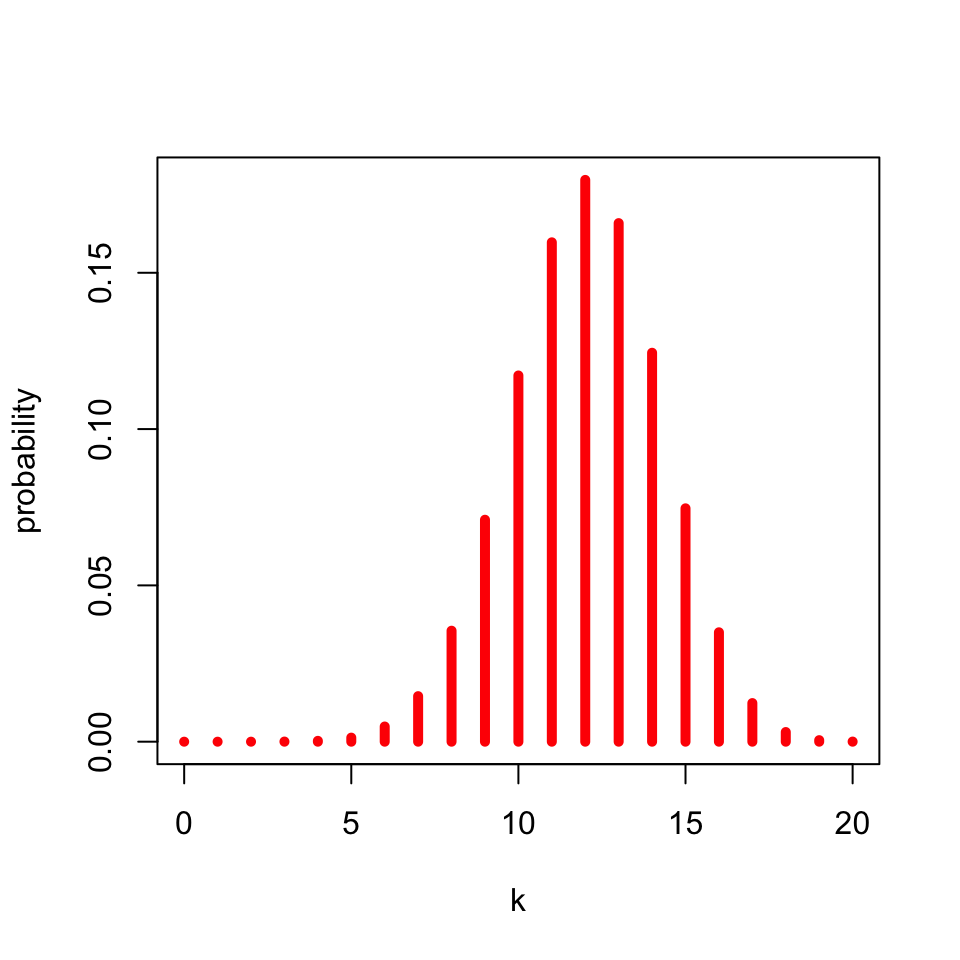
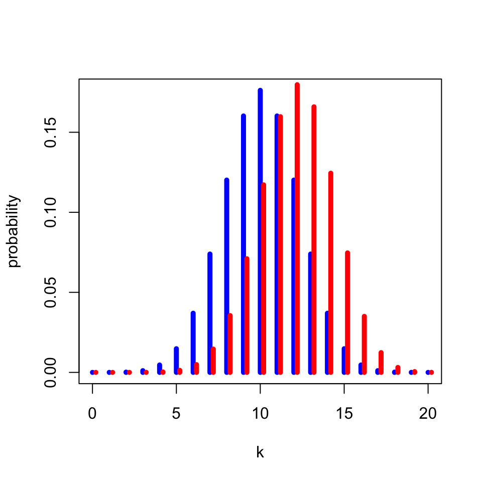
以下の式で計算される
\[\begin{equation} P(\text{表の回数}\ge 15) = \sum_{k=15}^{20}\left(20\atop k\right) 0.5^{k} (1-0.5)^{20-k} = 0.02 \end{equation}\]
「20回投げて表が出た回数」を検定統計量と考える
「20回投げて15回以上表が出たら怪しい」と考える
この方策で「いかさまのないコイン」を間違えて怪しいとしてしまう確率は0.02である
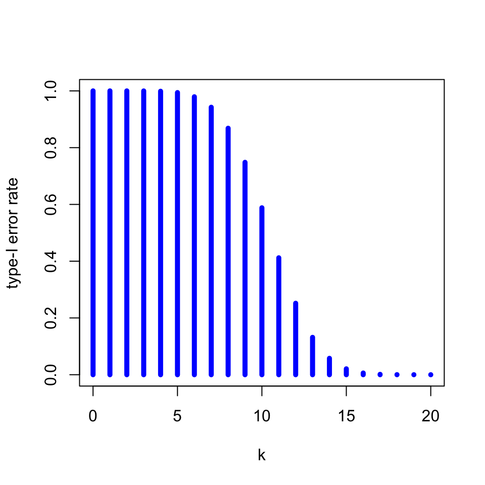
以下の式で計算される
\[\begin{equation} P(\text{表の回数}\ge 15) = \sum_{k=15}^{20}\left(20\atop k\right) 0.6^{k} (1-0.6)^{20-k} = 0.13 \end{equation}\]
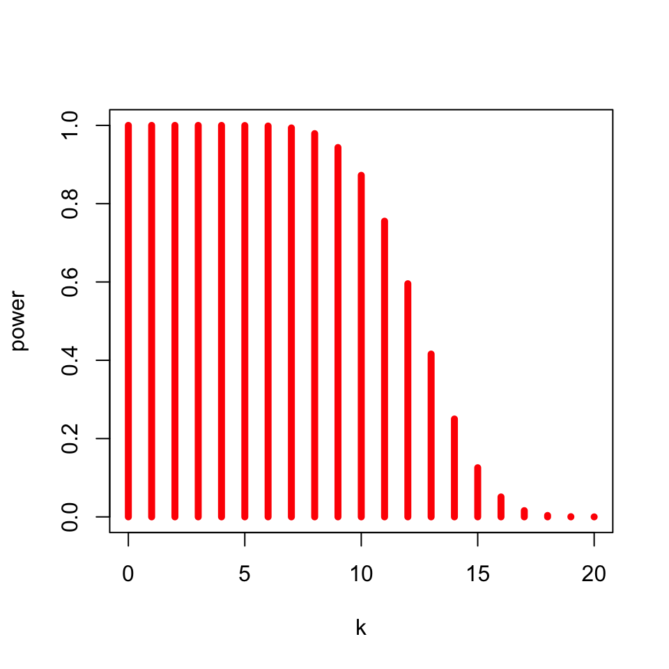
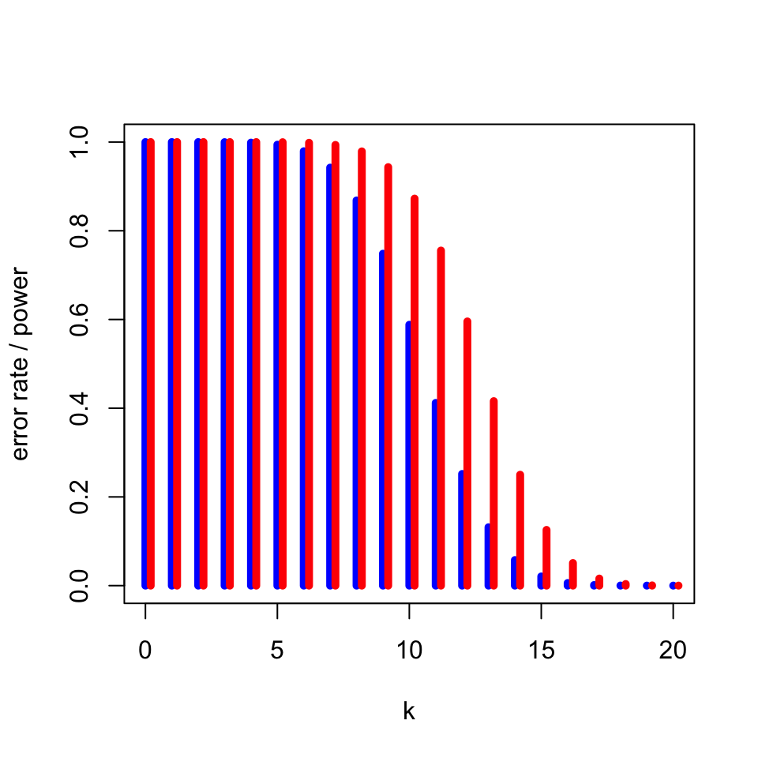
以下の式で計算される
\[\begin{equation} P(\text{表の回数}\ge 15) = \sum_{k=15}^{20}\left(20\atop k\right) 0.9^{k} (1-0.9)^{20-k} = 0.98 \end{equation}\]
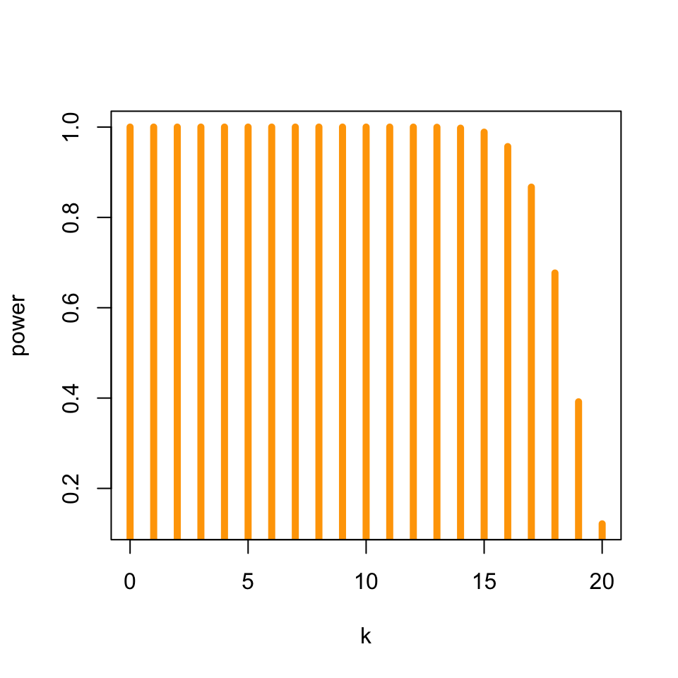
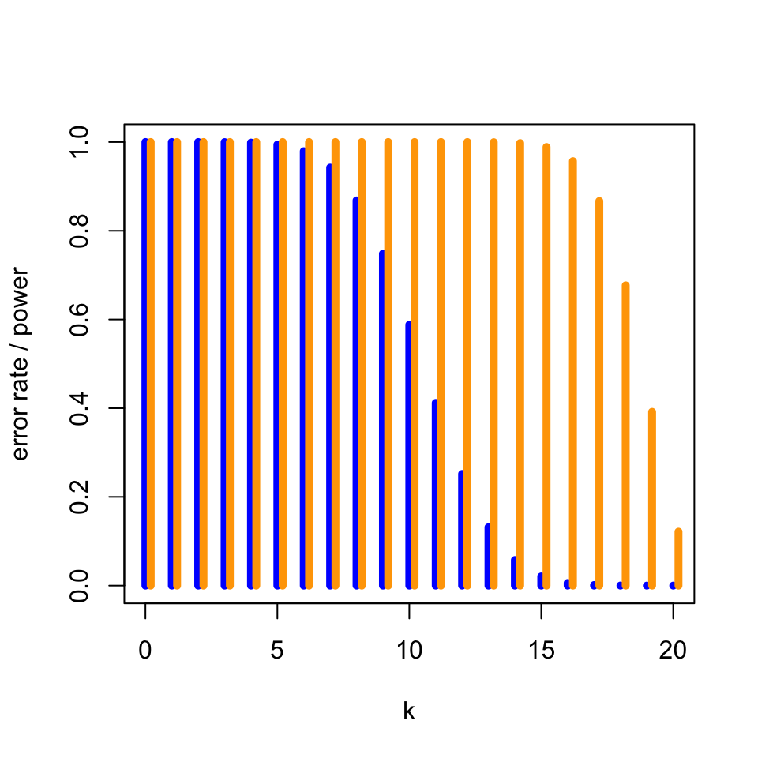
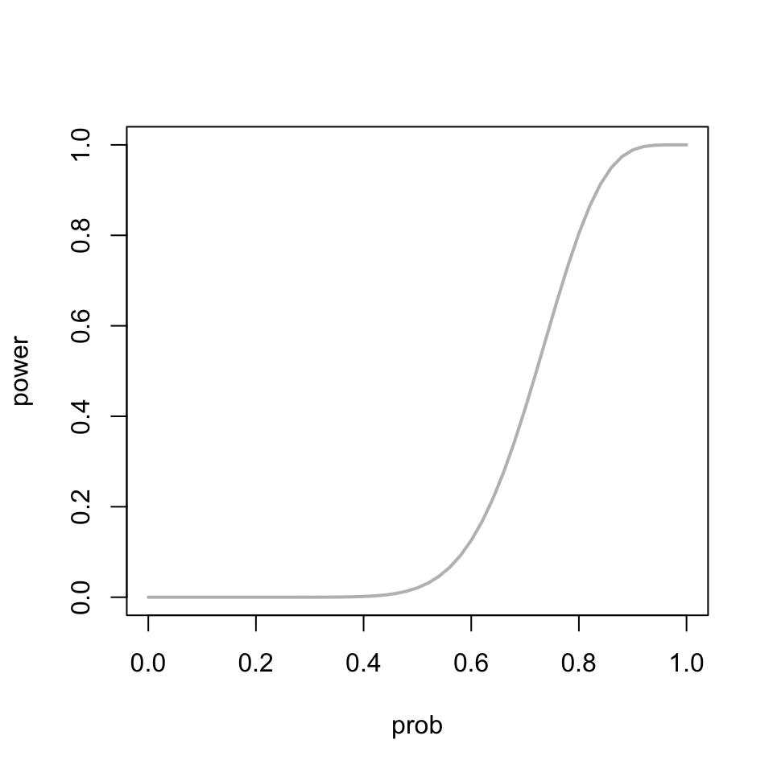
以下の式で計算される
\[\begin{equation} P(\text{表の回数}\ge 60) = \sum_{k=60}^{100}\left(100\atop k\right) 0.5^{k} (1-0.5)^{100-k} = 0.028 \end{equation}\]
異なる検定統計量「100回投げて表が出た回数」を考えている
以下の式で計算される
\[\begin{equation} P(\text{表の回数}\ge 60) = \sum_{k=60}^{100}\left(100\atop k\right) 0.6^{k} (1-0.6)^{100-k} = 0.543 \end{equation}\]
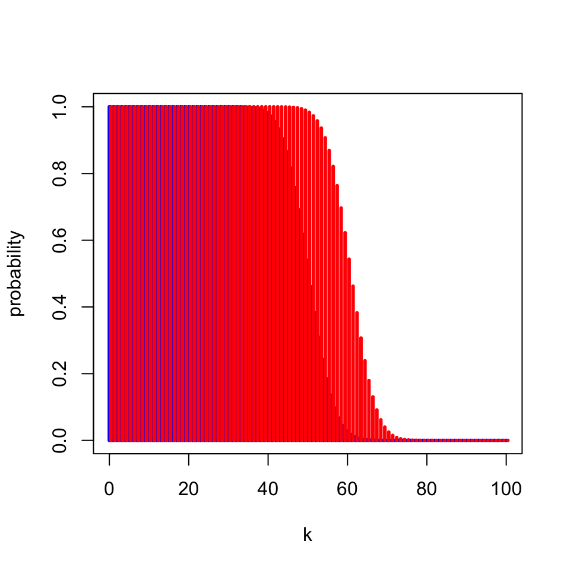
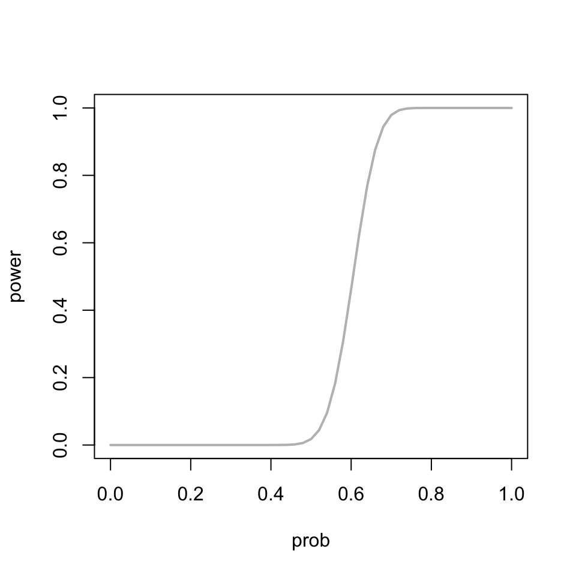
定義
p値 は観測された値を使った検定の第一種の過誤の確率として定義される